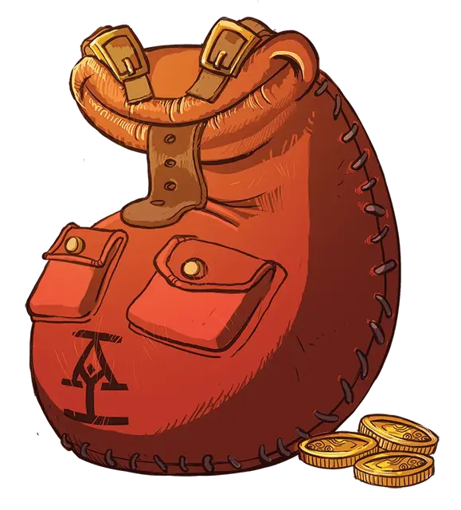

Живая сумка с добычей
Living Loot Satchel
Чудесный предмет, редкость варьируется (2-й ранг - необычный, 3-й ранг - редкий, 4-й ранг - очень редкий)

При получении 2-го ранга, вы получаете возможность использовать живую сумку с добычей, которая является необычным магическим предметом. Она функционирует как сумка хранения [bag of holding] и доступна в различных цветах и стилях.
Классовая живая сумка с добычей
| Класс | Сумка |
| Варвар | Широкий пояс с дюжиной висячих карманов |
| Бард | Чехол для лютни |
| Жрец | Пустой священный том |
| Друид | Сумка, изготовленная из натуральных, органических, тканых волокон местного производства. |
| Воин | Толстая, покрытая боевыми царапинами железная шкатулка |
| Паладин | Металлический футляр с тонкой гравировкой и завитушками |
| Следопыт | Сверток на меховой подкладке |
| Плут | Невзрачный мешочек для монет |
| Чародей | Потрепанная кожаная сумка, из чьих швов постоянно извергаются искры |
| Колдун | Монстр сшитый из лоскутов - кожаная сумка с «чисто декоративной» клыкастой пастью. |
| Волшебник | Карманное измерение, спрятанное в рукаве или внутри шляпы |
Живая сумка с добычей - это своего рода магическое существо, которое охраняет средства и ценности компании. Её карманы соединены с надежным сундуком в хранилище головного офиса в Глубоководье, куда сумка периодически отправляет имущество компании. Действием вы можете перевести любую сумму ваших средств, выделенных компанией обратно в свою сумку с помощью успешной проверки Ловкости (Ловкость рук) Сл 15.
Секретная сумка. При получении 3-го ранга, ваша живая сумка с добычей получает обновление, чтобы функционировать как копия сундука, используемого как Леомундов потайной сундук [Leomund’s secret chest], становясь редким магическим предметом. Вы можете открыть потайной сундук через свою живую сумку с добычей, чтобы положить или вынуть предметы - даже те, которые обычно не помещаются в вашу сумку, но которые помещаются в сундук. Благодаря тому, что головной офис заключает сделки, о которых вы не хотите знать, с экстрапланарными существами, о которых вы действительно не хотите знать, у заклинания нет никаких шансов закончиться.
Это то, что тебе нужно. При получении 3-го ранга, вы можете использовать Бонусное действие, чтобы покопаться в своей живой сумке с добычей и совершить проверку Ловкости (Ловкость рук) Сл 15. В случае успеха вы вынимаете предмет по вашему выбору из таблицы снаряжения для приключений из главы 5 «Снаряжение» из «Книги игрока». Предмет должен быть такого размера, чтобы он мог поместиться в ваш потайной сундук, и стоить не более 15 зм. Как только вы попытаетесь вытащить пять предметов из своей сумки, вы больше не можете вытаскивать предметы до следующего рассвета.
Переносная дыра в сумке. При получении 4-го ранга ваша живая сумка с добычей получает ещё одно обновление, становясь очень редким магическим предметом. Потайной сундук, к которому можно получить доступ с помощью вашей сумки, теперь имеет вместимость переносной дыры [portable hole] - 6 футов в диаметре и 10 футов в глубину. Как и прежде, вы можете поместить любой предмет подходящего размера в переносную дыру в сумке, даже если он обычно не помещается в вашу сумку.
Та самая дорогостоящая вещь, нужная тебе. Кроме того, при получении 4-го ранга, когда вы используете свойство «Это то, что тебе нужно», вы можете вынуть любой предмет стоимостью до 250 зм, если он помещается в вашей переносной дыре в сумке.